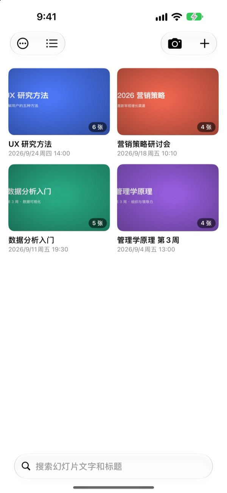
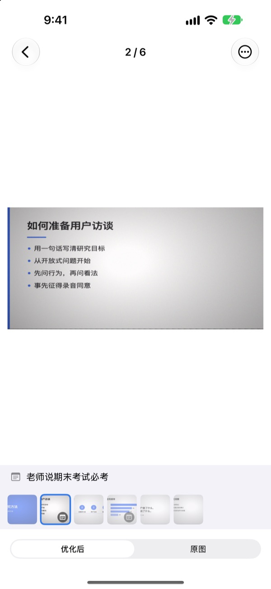
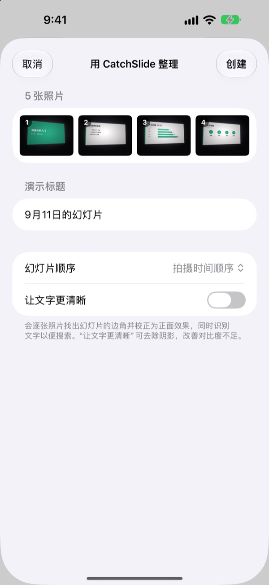
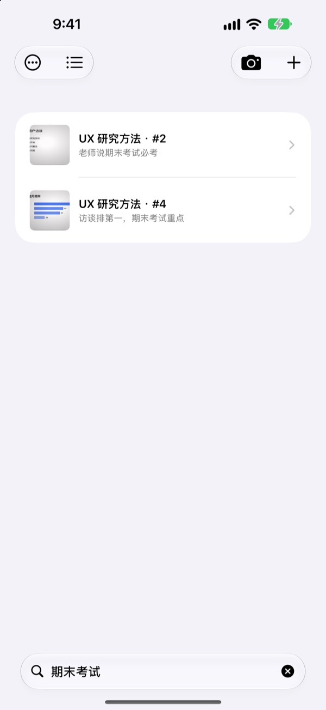

坐在侧边拍，
存下来却是正面
相机会找到幻灯片的四个角，把画面拉正，并裁掉周围的背景。连续拍下的幻灯片会自动归到同一个演示里。
一次购买，全部功能。没有订阅，也不用注册账号。

亲手拉正一张
这是在教室侧边座位斜着拍的照片。绿色线框就是找到的幻灯片四个角。
想复习时翻遍相册，却找不到那页幻灯片？
后排拍的幻灯片总是歪的，还混在自拍和小票中间。教室里一安静，连快门声都让人不好意思按。CatchSlide 静音拍摄、自动拉正，再按演示帮你收好。
拍下的那一刻就是正的
相机实时追踪幻灯片的四个角，对准后会变成绿色。即使斜着拍，也能校正成正面视角，并裁掉背景。
拍照没有快门声。打开自动拍摄后，每换一页就自动拍下，拍糊的会自动跳过。

以前拍的照片，也能一次导入
在“照片”App 里选几张课堂照片，共享到 CatchSlide，就会按拍摄顺序拉正，整理成一个演示。
打开让文字更清晰，还能去掉阴影，让发灰的画面变得清楚。

记得一个词，就能找到
CatchSlide 会在设备上识别每页幻灯片里的文字。过了好几周，凭一个词也能找回那一页。
每页留下的笔记也能搜到。写上期末考试，考试范围一搜就全出来了。

三步就能上手
- 1
打开相机
从列表里的相机按钮、主屏幕小组件或锁定屏幕都能打开。
- 2
把幻灯片框进画面
四个角变绿后按快门，或者交给自动拍摄。
- 3
按演示回看
搜索、写笔记，再导出复习用 PDF。
一个演示能做的事
- 录音
- 边拍边录，打开某页幻灯片时，就从拍下这页的那一刻开始播放
- 转写
- 把录音转成文字，按页显示当时讲了什么，也能用来搜索
- AI 摘要
- 根据幻灯片文字和转写内容总结整个演示（需支持 Apple Intelligence 且运行 iOS 26 或更高版本的设备）
- 每页放 1 张、2 张或 4 张幻灯片的复习用 PDF
- Markdown
- 可直接导入 Notion 或 Obsidian 的 .zip
- PowerPoint
- 导出为 .pptx，转写内容放进演讲者备注
- 合并演示
- 选几个演示，合成一个
- iCloud 同步
- 打开后，同一 Apple ID 的其他设备也能看到你的演示。默认关闭
- 小组件
- 在主屏幕和锁定屏幕上直接打开相机
文字识别、转写和 AI 摘要都在设备上完成。
买一次，功能全都有
CatchSlide
- 静音拍摄、自动拍摄、自动拉正
- 从“照片”App 批量导入
- 按演示整理，搜索文字和笔记
- 录音、转写、AI 摘要
- 导出 PDF、Markdown、PowerPoint
- iCloud 同步和小组件
打赏（自愿）
- 如果这个 App 帮到了你，可以给开发者一点小小的打赏
- 打赏不会解锁任何功能，不打赏也能用全部功能
可在“我的信息”页面打赏。
没有订阅，也没有需要另外付费才能解锁的功能。价格请以 App Store 显示为准。
常见问题
怎么拍幻灯片？
打开相机，把幻灯片对进画面，四个角会变成绿色，这时按快门即可。打开自动拍摄后，每换一页都会自动拍下一张。
拍照有快门声吗？
没有。它直接保存相机画面，所以在任何国家使用都是静音的。
为什么好几张会归到同一个演示里？
如果距离上一张不到 5 分钟就接着拍，会被当作同一个演示。在列表里点标题可以改名，被拆开的演示可以用合并演示合成一个。
能导入以前拍的照片吗？
可以。在“照片”App 里选几张，用共享按钮选择 CatchSlide；或者点列表里的 ＋，选从照片导入。照片会按拍摄顺序拉正，整理成一个演示。
四个角找得不对怎么办？
打开那页幻灯片，在 ⋯ 菜单里选调整边角，拖动四个角重新对齐。也可以用自动检测重新查找，或用整张图保留整张照片。原图会一直保留，随时可以重新校正。
能搜索幻灯片里的文字吗？
在列表顶部的搜索栏输入关键词，就会在幻灯片文字、演示标题、笔记和转写内容里查找，并直接跳到那一页。文字识别在设备上完成。
怎么导出 PDF？
在演示里打开共享菜单，选导出为 PDF，再选每页 1 张、2 张或 4 张的版式。之后可以在共享面板里存到“文件”，或发送到其他 App。
怎么调整顺序或删除幻灯片？
在演示里长按一页幻灯片并拖动，就能调整顺序。长按弹出的菜单可以删除或共享单页，用选择可以一次删除多页。
录音和 AI 摘要怎么用？
打开相机画面上方的录音再拍，每页幻灯片都会带上当时的声音。在演示笔记里点用 AI 生成摘要，会根据幻灯片文字和转写内容总结演示。AI 摘要仅适用于支持 Apple Intelligence 且运行 iOS 26 或更高版本的设备。
我的幻灯片和录音存在哪里？
都保存在你的设备上。只有在“我的信息”里打开同步后，才会上传到你自己的 iCloud，而且不需要注册账号。详情请参阅隐私政策。
如有问题、错误反馈或功能建议，请发邮件至 leeo@kakao.com。